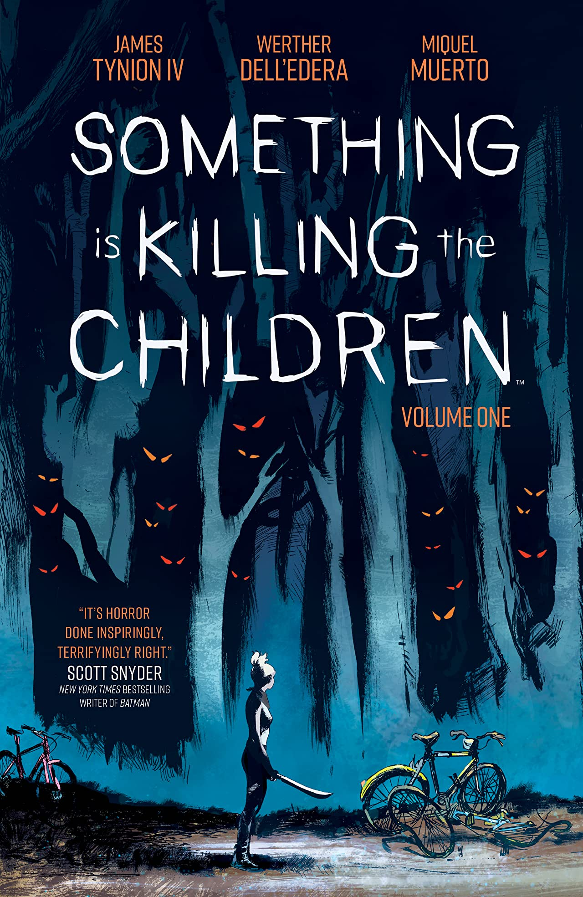

Newest Addition
Something Is Killing The Children
Author: James Tynion IV
Artist: Werther Dell'edera
Publishers: BOOM! Studios
Brief Description:
In a sleepy town in the heart of America, children have started to die in horrific ways. The local police are mystified by the brutal murders, and frantic to catch the killer. But they refuse to believe reports of impossible creatures that lurk in the shadows snatching children and tearing them to pieces, especially since the only people who claim to have seen these so-called monsters are other children. Enter Erica Slaughter, a mysterious stranger who rides into town and claims she can solve their “monster” problem. But can the townspeople trust this dangerous outsider with their children’s lives? And more importantly, can the children trust this strange adult with their secrets?
Link to purchase